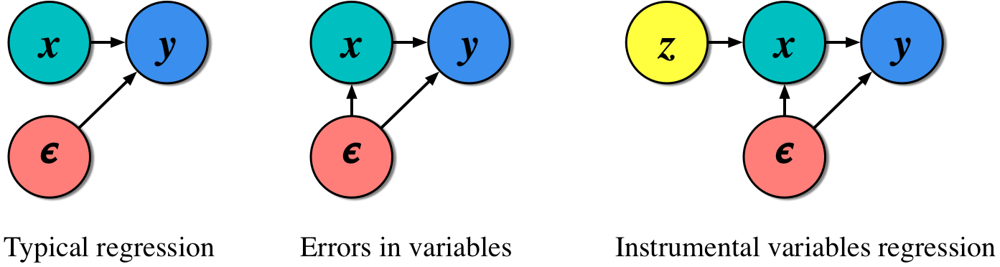

4 Lab III: 2SLS & Instrumental Variables

4.0.1 Preparation
## Packages
library(haven) ## Package to read Stata data
library(ivreg) ## Package to run 2sls
library(fixest) ## This package can also run 2SLS
library(tidyverse) ## For tidyverse commands
library(here) ## Importing Data
## Loading Data
hajj_public <- read_dta("Data/hajj_public.dta")Do important life experiences influence political and social views? In particular, does performing the Hajj pilgrimage to Mecca affect the views of pilgrims? David Clingingsmith, Asim Ijaz Khwaja, and Michael Kremer (2009) analyze this question by using two-stage least squares to compare successful and unsuccessful applicants in a lottery used by Pakistan to allocate Hajj visas.
We will conduct pared-down models. The paper creates indices and implements additional statistical procedures to produce a broader and clearer picture. It is not a bad idea to read this paper to see how we can extend the methods we learn in class to your own work. I posted the paper on Canvas for your convenience.
Data description
| Variable | Description |
|---|---|
| hajj2006 | Went on Hajj trip in 2006 |
| success | Won the lottery to have expenses covered for Hajj |
| ptygrp | Categorical variable indicating size of party for Hajj trip |
| smallpty | 1 if small party group, 0 otherwise |
| urban | 1 if live in urban area, 0 otherwise |
| age | Age |
| female | 1 if female, 0 otherwise |
| literate | 1 if literate, 0 otherwise |
| x_s7q10 | Natl affairs: How often do you follow national affairs in the news on television or on the radio? Binary: 0=Twice a week or less, 1=Several times a week or more |
| x_s14aq10 | Religious: Do others regard you as religious? Binary: 1=Religious, 0=Not Religious |
| x_s10bq4 | OssamaIncorrect: Do you believe goals Ossama is fighting for are correct? Binary: 1=Not Correct at All/Slightly Incorrect, 0=Correct/Absolutely Correct |
| x_s7q12a | GovtForce: Govt should force people to conform to Islamic injunctions. Binary: 1=Agree Strongly/Agree, 0=Neutral/Disagree/Strongly Disagree |
| x_s7q1 | NatlInterest How interested would you say you are in national affairs? Binary: 0=Not interested, 1=Interested |
| x_s3q3 | Happy: how happy are you? From 1 (not at all happy) to 4 (very happy). |
| x_s10eq2 | GirlsSchool: In your opinion, girls should attend school. Binary: 0=Disagree, 1=Agree |
| s10dq1 | JobsWomen: When jobs are scarce, men should always have more right to a job than women. Binary: 0=Generally agree, 1=Generally Disagree |
More details on these and other variables are available in Appendix 3 of the paper. If you cannot access the version, the SSRN version works as well.
4.1 Estimate a basic OLS model with “Do others regard you as religious” as the dependent variable as a function of Hajj2006. Explain how there might be endogeneity.
hajj_public %>%
lm(x_s14aq10~hajj2006, data=.) %>%
broom::tidy()## # A tibble: 2 × 5
## term estimate std.error statistic p.value
## <chr> <dbl> <dbl> <dbl> <dbl>
## 1 (Intercept) 0.767 0.0154 49.8 4.94e-323
## 2 hajj2006 0.0851 0.0199 4.27 2.09e- 5There may be endogeneity due to baseline bias caused by the religiosity of respondents. A more religious respondent may be more likely to go on a Hajj trip and be classified as religious by others. Going to church, like actually being religious, is also a factor that may be correlated with x and lurking in the error term.
4.2 Explain how the “success” variable may satisfy the conditions for a instrumental variable.
The two conditions, inclusion and exclusion, are: \[Cov(X,Z)\ne0\] & \[Cov(Z,\epsilon)=0\]
The lottery is randomizes, which means it is not correlated with the error term, or anything else other than the treatment variable, in our model. Further, it meaningfully effects our key independent which is tested below.
4.3 Estimate a 2SLS model Religious as a function of Hajj2006.
## With library(ivreg)
hajj_public %>%
ivreg(x_s14aq10~hajj2006 | success, data=.) %>%
broom::tidy()## # A tibble: 2 × 5
## term estimate std.error statistic p.value
## <chr> <dbl> <dbl> <dbl> <dbl>
## 1 (Intercept) 0.757 0.0169 44.9 1.09e-281
## 2 hajj2006 0.101 0.0231 4.40 1.18e- 54.4 Show the first stage from the 2SLS model above. Explain the implications of the results.
hajj_public %>%
lm(hajj2006~success, data=.) %>%
broom::tidy()## # A tibble: 2 × 5
## term estimate std.error statistic p.value
## <chr> <dbl> <dbl> <dbl> <dbl>
## 1 (Intercept) 0.137 0.00893 15.4 6.35e-50
## 2 success 0.854 0.0122 69.9 0The t-score is 69.866 which is much higher than the 3 threshold. Our instrument meets in the inclusion condition.
4.5 Add covariates for age, literacy, urban, group size and gender to the 2SLS model Religious as a function of Hajj2006. What is different? Which variables are included in the first stage?
hajj_public %>%
ivreg(x_s14aq10~hajj2006 + age + literate + ptygrp + female + urban |
success + age + literate + ptygrp + female + urban, data=.)##
## Call:
## ivreg(formula = x_s14aq10 ~ hajj2006 + age + literate + ptygrp + female + urban | success + age + literate + ptygrp + female + urban, data = .)
##
## Coefficients:
## (Intercept) hajj2006 age literate ptygrp female urban
## 0.493486 0.101217 0.002687 0.014634 -0.000955 0.131693 0.0673984.6 Run multiple 2SLS models with OssamaIncorrect, GovtForce, NatlInterest, Happy, GirlsSchool and JobsWomen variables as dependent variables. Use the list of covariates from earlier. If you want, try using a loop or lapply (but not necessary).
## OssamaIncorrect
hajj_public %>%
ivreg(x_s10bq4~hajj2006 + age + literate + ptygrp + female + urban | success +
age + literate + ptygrp + female + urban, data=.) %>%
broom::tidy()## # A tibble: 7 × 5
## term estimate std.error statistic p.value
## <chr> <dbl> <dbl> <dbl> <dbl>
## 1 (Intercept) 0.158 0.0682 2.32 0.0207
## 2 hajj2006 0.0576 0.0247 2.33 0.0198
## 3 age -0.00160 0.000844 -1.89 0.0585
## 4 literate -0.00122 0.0283 -0.0430 0.966
## 5 ptygrp -0.0151 0.00729 -2.08 0.0381
## 6 female 0.0486 0.0240 2.03 0.0431
## 7 urban 0.00542 0.0252 0.215 0.830## GovtForce
hajj_public %>%
ivreg(x_s7q12a~hajj2006 + age + literate + ptygrp + female + urban | success +
age + literate + ptygrp + female + urban, data=.) %>%
broom::tidy()## # A tibble: 7 × 5
## term estimate std.error statistic p.value
## <chr> <dbl> <dbl> <dbl> <dbl>
## 1 (Intercept) 0.941 0.0487 19.3 2.04e-74
## 2 hajj2006 -0.0308 0.0176 -1.75 8.08e- 2
## 3 age 0.000518 0.000626 0.827 4.08e- 1
## 4 literate -0.0255 0.0186 -1.37 1.70e- 1
## 5 ptygrp -0.00846 0.00499 -1.69 9.05e- 2
## 6 female -0.0228 0.0170 -1.34 1.80e- 1
## 7 urban 0.000708 0.0168 0.0423 9.66e- 1## NatlInterest
hajj_public %>%
ivreg(x_s7q1~hajj2006 + age + literate + ptygrp + female + urban | success +
age + literate + ptygrp + female + urban, data=.) %>%
broom::tidy()## # A tibble: 7 × 5
## term estimate std.error statistic p.value
## <chr> <dbl> <dbl> <dbl> <dbl>
## 1 (Intercept) 0.304 0.0783 3.88 1.11e- 4
## 2 hajj2006 0.0155 0.0283 0.545 5.86e- 1
## 3 age -0.000378 0.000999 -0.379 7.05e- 1
## 4 literate 0.212 0.0300 7.05 2.80e-12
## 5 ptygrp -0.00736 0.00802 -0.918 3.59e- 1
## 6 female -0.117 0.0273 -4.30 1.84e- 5
## 7 urban 0.0897 0.0267 3.36 8.01e- 4## Happy
hajj_public %>%
ivreg(x_s3q3~hajj2006 + age + literate + ptygrp + female + urban | success +
age + literate + ptygrp + female + urban, data=.) %>%
broom::tidy()## # A tibble: 7 × 5
## term estimate std.error statistic p.value
## <chr> <dbl> <dbl> <dbl> <dbl>
## 1 (Intercept) 3.51 0.110 32.0 6.34e-174
## 2 hajj2006 -0.0641 0.0396 -1.62 1.06e- 1
## 3 age -0.00344 0.00140 -2.45 1.44e- 2
## 4 literate 0.145 0.0420 3.45 5.81e- 4
## 5 ptygrp 0.00463 0.0112 0.415 6.78e- 1
## 6 female -0.0673 0.0383 -1.76 7.89e- 2
## 7 urban 0.0169 0.0372 0.454 6.50e- 1## Girl School
hajj_public %>%
ivreg(x_s10eq2~hajj2006 + age + literate + ptygrp + female + urban | success +
age + literate + ptygrp + female, data=.) %>%
broom::tidy()## Warning in ivreg.fit(X, Y, Z, weights, offset, method, ...): more regressors than instruments## # A tibble: 7 × 5
## term estimate std.error statistic p.value
## <chr> <dbl> <dbl> <dbl> <dbl>
## 1 (Intercept) 0.894 0.0355 25.2 4.07e-118
## 2 hajj2006 0.0271 0.0133 2.04 4.16e- 2
## 3 age 0.000258 0.000469 0.550 5.83e- 1
## 4 literate 0.0414 0.0140 2.96 3.10e- 3
## 5 ptygrp -0.00283 0.00373 -0.758 4.49e- 1
## 6 female 0.00569 0.0128 0.443 6.58e- 1
## 7 urban NA NA NA NA## Jobs Women
hajj_public %>%
ivreg(x_s10dq1~hajj2006 + age + literate + ptygrp + female + urban | success +
age + literate + ptygrp + female, data=.) %>%
broom::tidy()## Warning in ivreg.fit(X, Y, Z, weights, offset, method, ...): more regressors than instruments## # A tibble: 7 × 5
## term estimate std.error statistic p.value
## <chr> <dbl> <dbl> <dbl> <dbl>
## 1 (Intercept) 0.153 0.0493 3.10 0.00194
## 2 hajj2006 -0.00687 0.0185 -0.371 0.711
## 3 age -0.00104 0.000651 -1.59 0.112
## 4 literate 0.0241 0.0194 1.24 0.215
## 5 ptygrp -0.00932 0.00519 -1.80 0.0724
## 6 female 0.0569 0.0179 3.18 0.00148
## 7 urban NA NA NA NA## Loop
## DVs
dvs <- c("hajj_public$x_s10bq4", "hajj_public$x_s7q12a", "hajj_public$x_s7q1",
"hajj_public$x_s3q3", "hajj_public$x_s10eq2", "hajj_public$x_s10dq1")
## Loop
for(i in 1:length(dvs)){
model <- paste("model",i, sep="")
m <- ivreg(as.formula(paste(dvs[i],"~ hajj2006 + age + literate + ptygrp +
female + urban | success + age + literate + ptygrp + female + urban")), data = hajj_public)
assign(model,m)}
model_list <- list(model1, model2, model3, model4, model5, model6)
b <- round(sapply(model_list, function(x) x$coefficients["hajj2006"]) , 2)
t <- round(sapply(model_list, function(x) {
summary(x)$coefficients["hajj2006", 3]}) , 2)
names <- c("OsamaIncorrect", "GovtForce", "NatlInterest", "Happy", "GirlsSchool", "JobsWomen")
data.frame(DV = names, b, t) %>%
arrange(desc(b))## DV b t
## 1 OsamaIncorrect 0.06 2.33
## 2 GirlsSchool 0.03 1.99
## 3 NatlInterest 0.02 0.55
## 4 JobsWomen -0.01 -0.44
## 5 GovtForce -0.03 -1.75
## 6 Happy -0.06 -1.62